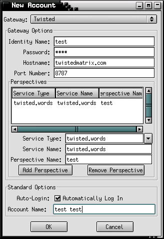
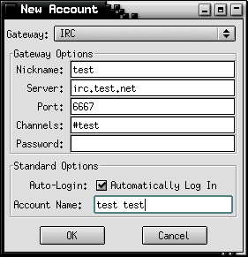
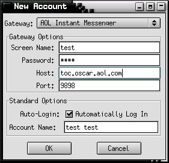

Every project's gotta have 'em. Twisted is particularly difficult to take a
real screenshot
of, since it usually lives under the hood. I've taken
some screenshots of various Twisted applications in order to give you a feel
for what it makes possible.
Here's my personal web server starting up, handling one request, and shutting down in a terminal. You can see a few things here.
twistdfrom wherever it's located on a pickled application object.
Here you can see selection of different accounts.
|  |  |
|  |
... and dialogs for creating all the different kinds of accounts that Twisted can access.
Once we're logged in, we can see who's online, and choose who to talk to.
If time permits, we can talk to them.
IM doesn't skimp on group conversation features: we can chat with groups just as easily as with individuals. (The buttons on the right might indicate to the observant reader that some functionality is still a bit raw... but we're working on it.)
We also have an official background pattern. For T-Shirts and such, you can look at the Twisted CafePress store.
{kind=link}